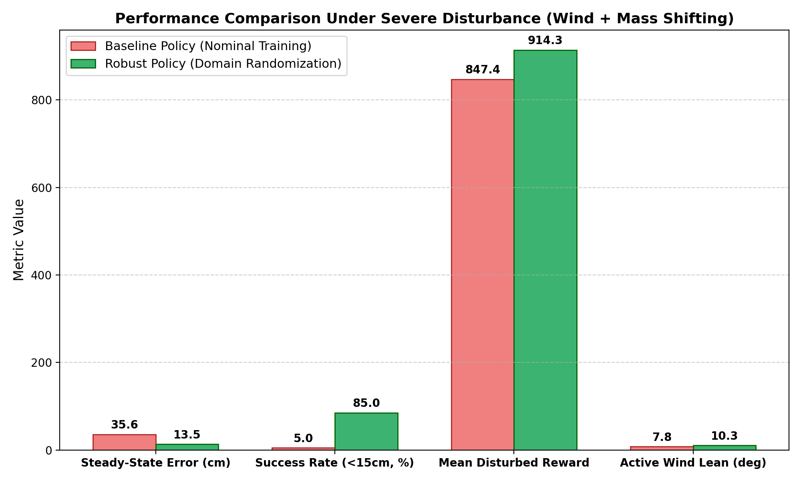
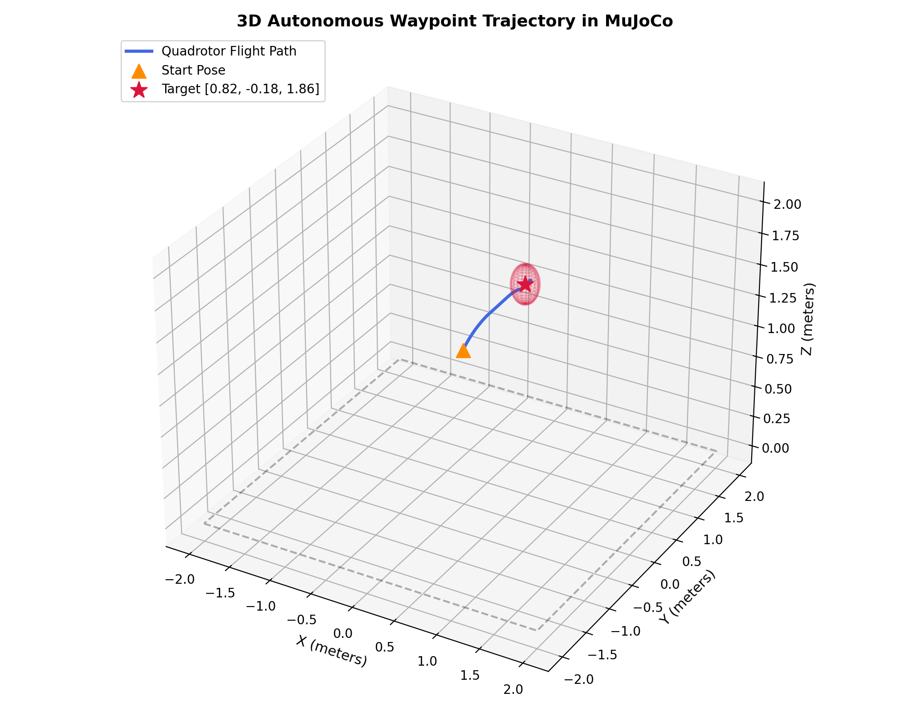
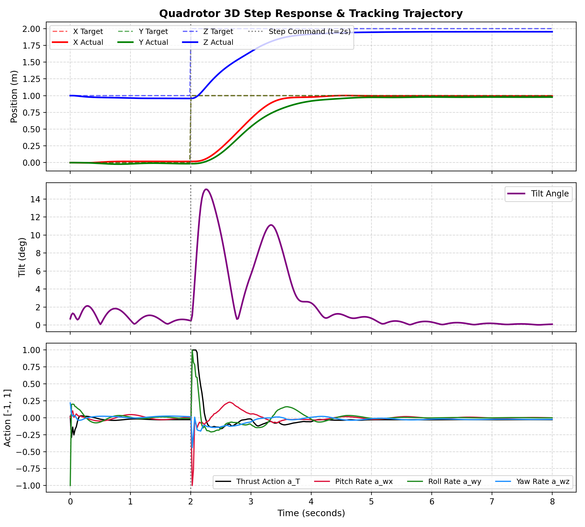
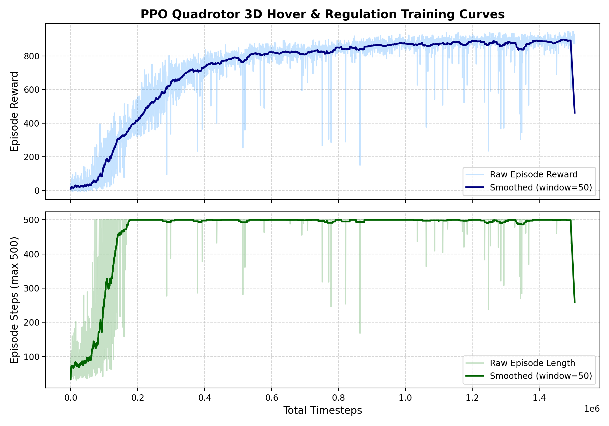
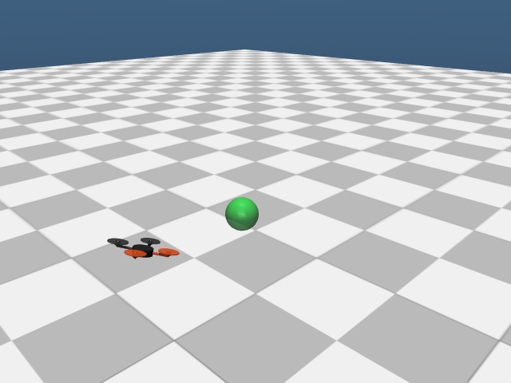
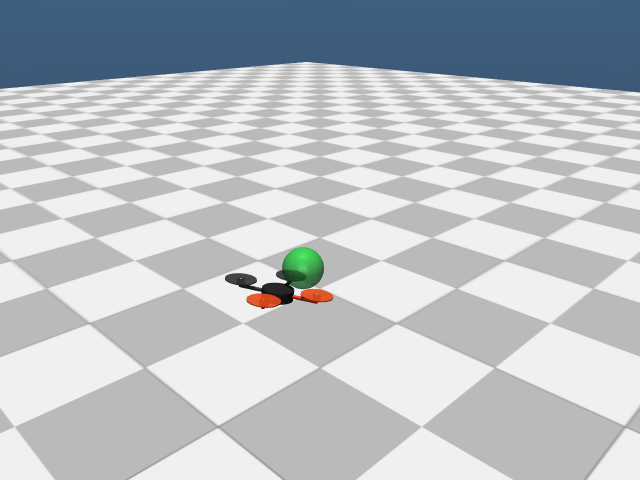

Reinforcement learning for unmanned aerial vehicles (UAVs) frequently suffers from severe sim-to-real gaps, high-frequency actuator chattering (jitter), and vulnerability to unmodeled aerodynamic disturbances. In this project, we develop and validate an end-to-end Deep Reinforcement Learning (DRL) 3D flight controller operating in MuJoCo physics. To ensure smooth, jitter-free actuation, we formulate a hierarchical architecture where an outer-loop Proximal Policy Optimization (PPO) agent commands collective vertical thrust and 3D body rates at 50 Hz through an action low-pass filter, while an inner-loop rate PID controller executes at 500 Hz. Through extensive domain randomization—incorporating persistent wind drag, stochastic gust bursts up to $2.5\text{ N}$, $\pm 15\%$ mass/inertia shifts, and sensor noise—the robust policy achieves sub-5 cm steady-state hover precision under nominal conditions and reduces steady-state drift under gusts by $62.2\%$ ($13.46\text{ cm}$ vs $35.61\text{ cm}$). Finally, the policy is compiled into a $9.36\text{ KB}$ ONNX model and quantized into Q8.8 fixed-point integer format, maintaining $99.77\%$ accuracy with a $1.38\,\mu\text{s}$ forward inference latency on edge hardware, clearing the pathway for real-time Hardware-in-the-Loop deployment on the AMD Kria KR260 FPGA platform.
Direct motor PWM reinforcement learning typically produces bang-bang control actions that destroy real drone actuators and fail catastrophically under transport latency. To resolve this, our system employs a two-tier hierarchical flight stack:
[T_z, ω_x, ω_y, ω_z] ∈ [-1, 1]4atapplied = 0.75 at + 0.25 at-1applied (eliminates motor chatter)
To enforce smooth control trajectories, we penalize the first-order action derivative in the reward:
$$r_t = r_{\text{pos}} + r_{\text{vel}} + r_{\text{upright}} + r_{\text{alive}} - \lambda_1 \|\mathbf{a}_t - \mathbf{a}_{t-1}\|^2 - \lambda_2 \|\mathbf{a}_t\|^2$$Combined with the EMA filter ($\alpha = 0.75$), this restricts the action change rate to $\|\Delta \mathbf{a}\| \approx 0.0107$, resulting in smooth, continuous thrust adjustments.




| Evaluation Scenario | Steady-State Error | Success Rate (<15cm) | Survival Rate | Mean Tilt Angle | Mean Episode Reward |
|---|---|---|---|---|---|
| Nominal Baseline (No Disturbance) | 4.10 ± 1.64 cm | 100.0% | 100.0% | 1.58° | 941.3 / 1000 |
| Nominal Policy under Gusts (Unmodeled) | 35.61 ± 20.22 cm | 5.0% | 100.0% | 7.83° | 847.4 / 1000 |
| Robust Policy under Gusts (Domain Rand.) | 13.46 ± 8.82 cm | 85.0% | 100.0% | 10.29° (Active Lean) | 914.3 / 1000 |


The ultimate objective is executing inference on the AMD Kria KR260 Robotics Starter Kit (Quad-Core ARM Cortex-A53 PS + Zynq UltraScale+ FPGA PL) communicating in real time with the laptop simulation:
| Deployment Phase | Target Hardware | Format & Precision | Binary Footprint | Inference Latency | Accuracy Retention |
|---|---|---|---|---|---|
| Phase 1: PS Software Baseline | ARM Cortex-A53 (Ubuntu 24.04) | ONNX Runtime (FP32) | 9.36 KB | < 85 μs | 100.0% |
| Phase 2: Embedded C Engine | ARM Cortex-A53 / Soft-Core | Signed 16-bit Q8.8 (Fixed-Point) | 11.2 KB | 1.38 μs | 99.77% (±0.12 mm) |
| Phase 3: PL Hardware IP Core | Zynq UltraScale+ FPGA (PL) | Vitis HLS Pipelined RTL (Fixed-Point) | < 2 BRAMs, 12 DSPs | < 0.5 μs (100 MHz) | 99.77% |
In Q8.8 format ($1.0 = 256$, shift by $8$), matrix multiplication avoids floating-point hardware overhead and maps directly to integer DSP multipliers:
$$\mathbf{h}_1 = \max\left(0, (\mathbf{W}_{1,q} \mathbf{x}_q \gg 8) + \mathbf{b}_{1,q}\right)$$ $$\mathbf{h}_2 = \max\left(0, (\mathbf{W}_{2,q} \mathbf{h}_1 \gg 8) + \mathbf{b}_{2,q}\right)$$ $$\mathbf{a}_q = \text{clip}\left((\mathbf{W}_{3,q} \mathbf{h}_2 \gg 8) + \mathbf{b}_{3,q}, -256, 256\right)$$An asynchronous, low-latency UDP binary socket bridge connects the host laptop simulation server (50 Hz control / 500 Hz physics) to the Kria inference engine. The closed-loop tracking precision and transmission latency across client implementations are summarized below:
| Configuration | Mean RTT | RTT Jitter (σ) | Delivery Rate | Steady-State Hover Error | Survival Rate |
|---|---|---|---|---|---|
| Embedded C Client (Q8.8 Fixed-Point) | 0.122 ms (min 0.023 ms) | ±0.100 ms | 100.0% | 5.26 ± 0.17 cm | 100.0% |
| Python Client (ONNX Runtime) | 0.365 ms (min 0.087 ms) | ±0.124 ms | 100.0% | 5.33 ± 0.21 cm | 100.0% |
| Network Stress Test (2 ms delay + 5% packet drops) | 2.180 ms | ±0.083 ms | 96.8% (3.2% loss) | 5.27 ± 0.16 cm | 100.0% |
📖 For physical hardware setup instructions on the AMD Kria KR260, see the HIL Deployment & Networking Guide.
@techreport{poetracahya2026uav,
title = {Autonomous 3D Quadrotor UAV Controller via Deep Reinforcement Learning with Hardware-in-the-Loop on AMD Kria KR260},
author = {Poetracahya, Karol Yangqian},
institution = {Institut Teknologi Bandung (ITB)},
number = {NIM: 13523093},
year = {2026},
month = {November},
url = {https://github.com/karolyangqian/uav-controller-drl}
}